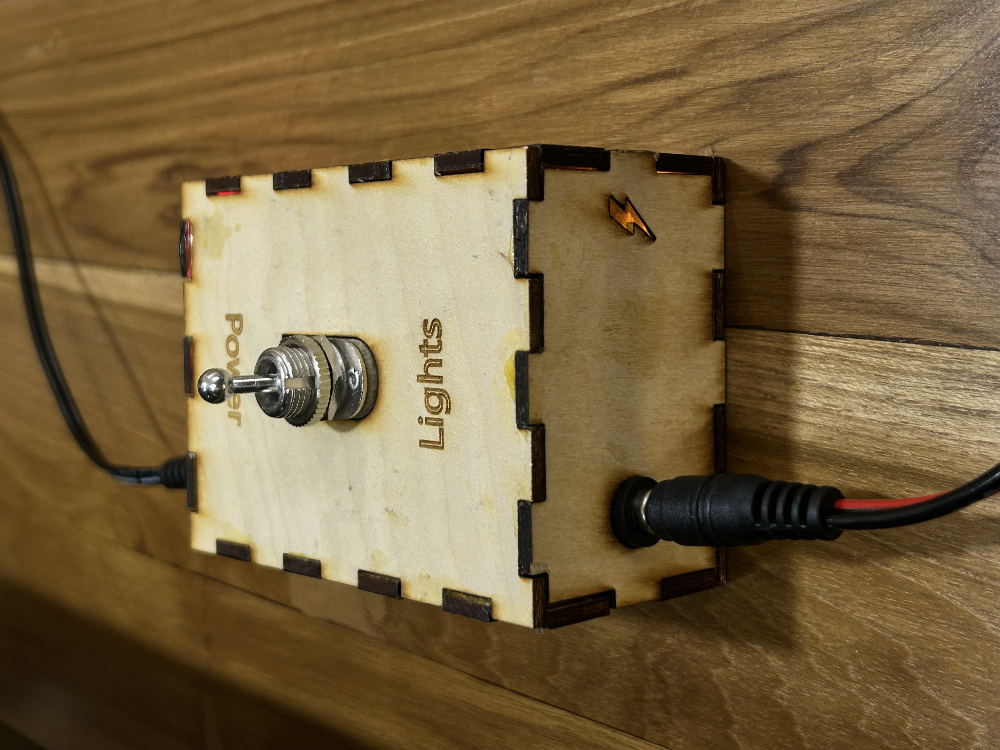
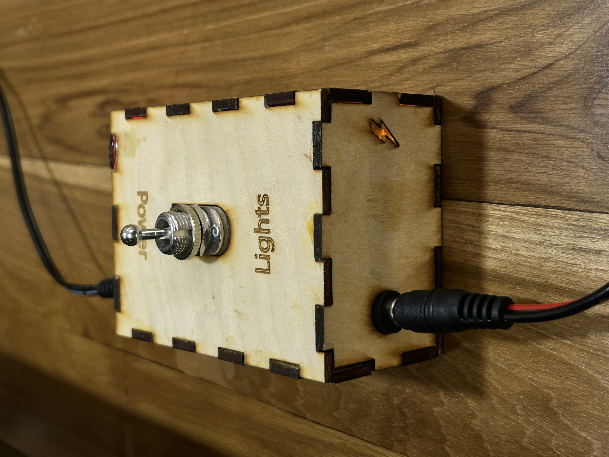

Smart Lighting Control with ESP32
Motivation
My cat chewed through the wires of my fairy lights. Instead of just taping them back together, I decided to upgrade them. I wanted a way to softly illuminate my room at night without the hassle of getting out of bed to turn them off.
So, I built an ESP32-based smart lighting system that lets me control the lights via a web interface, a physical switch, and an automatic timer. The system operates on its own self-hosted Wi-Fi, meaning I can control it wirelessly, even without internet access.
 
